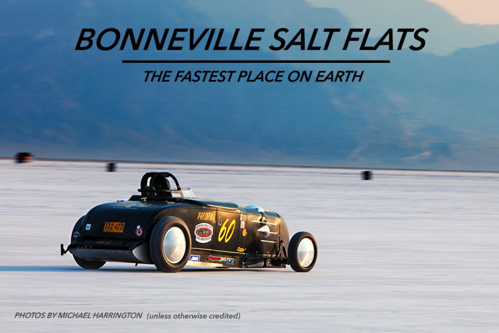

Goal: R. Zach observed crows usually fly to about 5 meters before dropping whelks and repeatedly drop same whelk until it opens. Can we understand why they display this behavior?
Question: What do you think may be important here? What variables would you collect if conducting your own experiment/observing crows?
\begin{array}{|c | c c c c c c c c c c|}
\hline
h &1.5&2&3&4&5&6&7&8&10&15\\
n &56&20&10.2&7.6&6&5&4.3&3.8&3.1&2.5\\ \hline
\end{array}
Question: Can you explain the equation for the fit above? What are the variables and parameters? What are their units? What is the deal with the "\(1 +\)" term?
Question: Let's assume crows operate in a way that minimizes the energy required to crack the whelk shell. What is the function we want to optimize? This is called the objective function.
Can you find the value of the height where the optimal value occurs? How does this compare with Zach's observations?
More information about this example can be found in the following papers:
The male fiddler crab Uca pugnax grows one oversize claw whose only purpose appears to be attracting a mate. The relationship between the claw mass \(C\) and the body mass \(B\) (not counting the claw mass), both given in milligrams, has been reported to be
\begin{equation*}
C = 0.036B^{1.356}.
\end{equation*}
Find a formula to relate the growth rates of the claw mass and body mass.
Plot the ratio of the claw mass growth rate to the body mass growth rate, as a function of body mass size in grams. Assume the body mass can be as large as 40 g.
For what body mass size in grams is the growth rate of the claw as large as the growth rate of the body mass?
At what body mass size in grams is the mass of the claw equal to the mass of the body?
Assume that the density of body tissues is roughly 1 mg per mm\(^3\) of volume, that the largest dimension of the claw is about 44 mm, and that the body mass is 30 g. Use this information to estimate the shape parameter \(c\) in the length-volume relationship \(V=cl^3\).
Example 3 - Bonneville Salt Flats

After performing a braking test at the Bonneville Salt Flats in Utah, a test driver reported:
``I accelerated smoothly from rest. After 15 seconds I was cruising at 60 mph. After 90 seconds I hit the brakes. The car decelerated (slowed down), but I couldn't stop in time. I hit the barrier 10 seconds later at 10 mph."
Sketch a plausible graph of the VELOCITY of the car's speed as a function of time.
Sketch a plausible graph of the POSITION the car as a function of time.
Sketch a plausible graph of the ACCELERATION the car as a function of time.
Example 4 -
Find the tangent line to the graph of \( f(x) = 2x^2 + \cos (\pi x/ 2) \) when \(x = 1\).
Derivative review
Find the derivatives for each of the functions below.